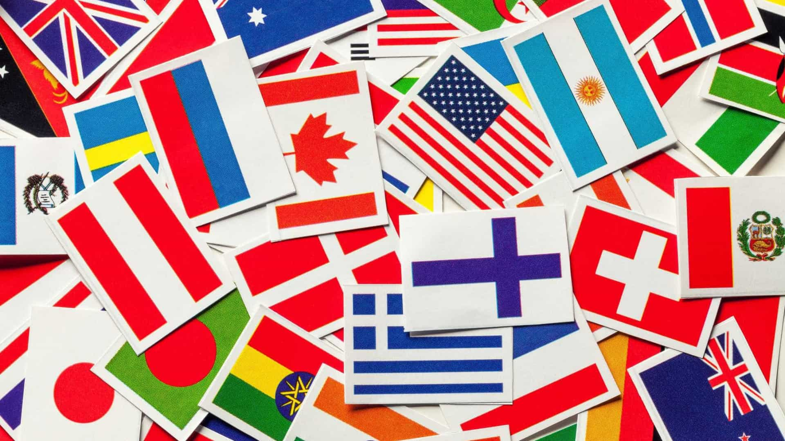

Noticias Cidades
Destaque
Internacional
O país vem ampliando sua presença nos mercados financeiros e de commodities internacionais e é um BRICS.O Brasil tem sido o maior produtor mundial de café dos últimos 150 anos e tornou-se o quarto maior mercado de automóveis do mundo. Entre os principais produtos de exportação estão aeronaves, equipamentos elétricos, automóveis, etanol, têxteis, calçados, minério de ferro, aço, café, suco de laranja, soja e carne enlatada. O país participa de diversos blocos econômicos como o Mercado Comum do Sul (Mercosul), o G20 e o Grupo de Cairns, e sua economia corresponde a três quintos da produção industrial da economia sul-americana. O Brasil comercializa regularmente com mais de uma centena de países, sendo que 74% dos bens exportados são manufaturas ou semimanufaturas. Os maiores parceiros são: União Europeia, Mercosul, América Latina, Ásia e Estados Unidos.
O KC-390, o maior avião de transporte militar já feito na América do Sul, é produzido pela Embraer, a terceira maior fabricante de aeronaves do mundo.
Colheitadeira em uma plantação de arroz em Rio do Sul, Santa Catarina. O Brasil é o terceiro maior exportador de produtos agrícolas do mundo. De acordo com a Confederação da Agricultura e Pecuária do Brasil (CNA) o setor do agronegócio responde por 23% do PIB brasileiro (2013). O Brasil está entre os países com maior produtividade no campo, apesar das barreiras comerciais e das políticas de subsídios adotadas pelos países desenvolvidos. Em relatório divulgado em 2010 pela OMS, o país é o terceiro maior exportador de produtos agrícolas do mundo, atrás apenas de Estados Unidos e União Europeia.
A indústria de automóveis, aço, petroquímica, computadores, aeronaves e bens de consumo duradouros contabilizam 30,8% do produto interno bruto brasileiro. A atividade industrial está concentrada geograficamente nas regiões metropolitanas de São Paulo, Rio de Janeiro, Curitiba, Campinas, Porto Alegre, Belo Horizonte, Manaus, Salvador, Recife e Fortaleza. Entre as empresas mais conhecidas do Brasil estão: Brasil Foods, Perdigão, Sadia e JBS (setor alimentício); Embraer (setor aéreo); Azaleia e Havaianas (calçados); Petrobras (setor petrolífero); Companhia Vale do Rio Doce (mineração); Marcopolo e Busscar (carroceiras); Gerdau (siderúrgicas) e Organizações Globo (comunicação).
A corrupção, no entanto, custa ao Brasil quase 41 bilhões de dólares por ano e 69,9% das empresas do país identificam esse problema como um dos principais entraves para conseguirem penetrar com sucesso no mercado global.[266] No Índice de Percepção da Corrupção de 2014, criado pela Transparência Internacional, o Brasil é classificado na 69ª posição entre os 175 países avaliados. O poder de compra brasileiro também é corroído pelo conjunto de problemas nacionais chamado "custo Brasil". Além disso, o país apresenta uma das menores taxas de participação do comércio exterior no PIB, sendo classificado como uma das economias mais fechadas do mundo. No Índice de Liberdade Econômica de 2015, por exemplo, o país foi classificado no 118º lugar entre 178 nações avaliadas. Apesar de também ser um problema crônico, desde 2001 os níveis de desigualdade social e econômica vêm caindo, chegando em 2011 aos níveis de 1960, embora o país ainda esteja entre os 12 mais desiguais do planeta.
Leia Mais!